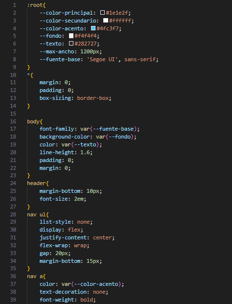
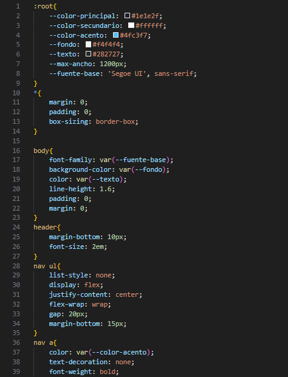

Introducción
Cascading Style Sheets (CSS) este es un lenguaje de hoja de estilo en cascada utilizado para especificar la presentación y estilo de un documento escrito en a lenguaje de marcado tal como HTML o XML (incluidos dialectos XML como SVG, MatemáticasML o XHTML). CSS es una tecnología fundamental del Web mundial, junto con HTML y JavaScript
CSS está diseñado para habilitar el separación de contenidos y presentación, incluido diseño, colores y fuentes. Esta separación puede mejorar el contenido accesible, ya que el contenido se puede escribir sin preocuparse por su presentación; proporciona más flexibilidad y control en la especificación de las características de la presentación; permite que múltiples páginas web compartan formato especificando el CSS relevante en un archivo lo que reduce la complejidad y la repetición en el contenido estructural.
La separación de formato y contenido también hace posible presentar la misma página de marcado en diferentes estilos para diferentes métodos de renderizado, como en pantalla, impreso, por voz (a través de un navegador basado en voz o lector de pantalla). CSS también tiene reglas para el formato alternativo si se accede al contenido en a dispositivo móvil.
El nombre en cascada proviene del esquema de prioridad especificado para determinar qué declaración se aplica si más de una declaración de una propiedad coincide con un elemento en particular. Este esquema de prioridad en cascada es predecible.
Caracteristicas de CSS
- CSS tiene un simple sintaxis y utiliza varias palabras clave en inglés para especificar los nombres de varias propiedades de estilo.
- Una hoja de estilo consta de una lista de reglas.Cada regla o conjunto de reglas consta de uno o más selectores
- En CSS, los selectores declaran qué parte del marcado se aplica un estilo haciendo coincidir etiquetas y atributos en el mismo marcado.
 

Tipos de selectores
- Todo elemento de un tipo específico, por ejemplo, los encabezados de segundo nivel
<h2> - Elementos especificados por atributos especiales:
- id: un identificador único dentro del documento, denotado en el idioma del selector por un prefijo hash, por ejemplo #id.
- class: un identificador que puede aplicarse a múltiples elementos, denotado por un punto, por ejemplo: .nombredeclase.
- Elementos dependiendo de cómo se coloquen en relación con otros en el árbol de documentos.
Las clases y los ID distinguen entre mayúsculas y minúsculas, comienzan con letras y pueden incluir caracteres alfanuméricos, guiones y guiones bajos. Una clase puede aplicarse a cualquier número de instancias de cualquier elemento. Un ID sólo se puede aplicar a un único elemento.
Pseudo-classes
Pseudoclases se utilizan en selectores CSS para permitir el formato basado en información que no está contenida en el árbol de documentos
Un ejemplo de pseudoclase ampliamente utilizada es :hover, que identifica el contenido sólo cuando el usuario "apunta" al elemento visible, generalmente sosteniendo el cursor del mouse sobre él. Se añade a un selector como en .class:hover o #id:hover.
Una pseudoclase clasifica elementos del documento, como por ejemplo :link o :visited mientras que un pseudoelemento realiza una selección que puede consistir en elementos parciales, como ::first-line o::first-letter. Tenga en cuenta la distinción entre la notación de dos puntos dobles utilizada para pseudoelementos y la notación de dos puntos simple utilizada para pseudoclases.
Combinadores
Se pueden unir varios selectores simples utilizando combinadores para especificar elementos por ubicación, tipo de elemento, id, clase o cualquier combinación de estos.El orden de los selectores es importante. Por ejemplo, div .myClass {color: red;} se aplica a todos los elementos de la clase myClass que están dentro de elementos div, mientras que .myClass div {color: red;} Se aplica a todos los elementos div que se encuentran dentro de los elementos de la clase myClass. Esto no debe confundirse con identificadores concatenados como div.myClass {color: red;} que se aplica a los elementos div de la clase myClass.
Values
Los valores pueden ser palabras clave, como "center" o "inherit", o valores numéricos, como 200px (200 píxeles), 50vw (50 por ciento del ancho de la ventana gráfica) o 80% (80 por ciento del ancho del elemento principal).
Los valores de color se pueden especificar con palabras clave (p. ej., "rojo"), valores hexadecimales (p. ej., #FF0000, también abreviado como #F00), valores RGB en una escala de 0 a 255 (p. ej., rgb(255, 0, 0)), valores RGBA que especifican tanto el color como la transparencia alfa (p. ej., rgba(255, 0, 0, 0.8)), o valores HSL o HSLA (p. ej., hsl(0 100% 50%), hsl(0 100% 50% / 0.8))